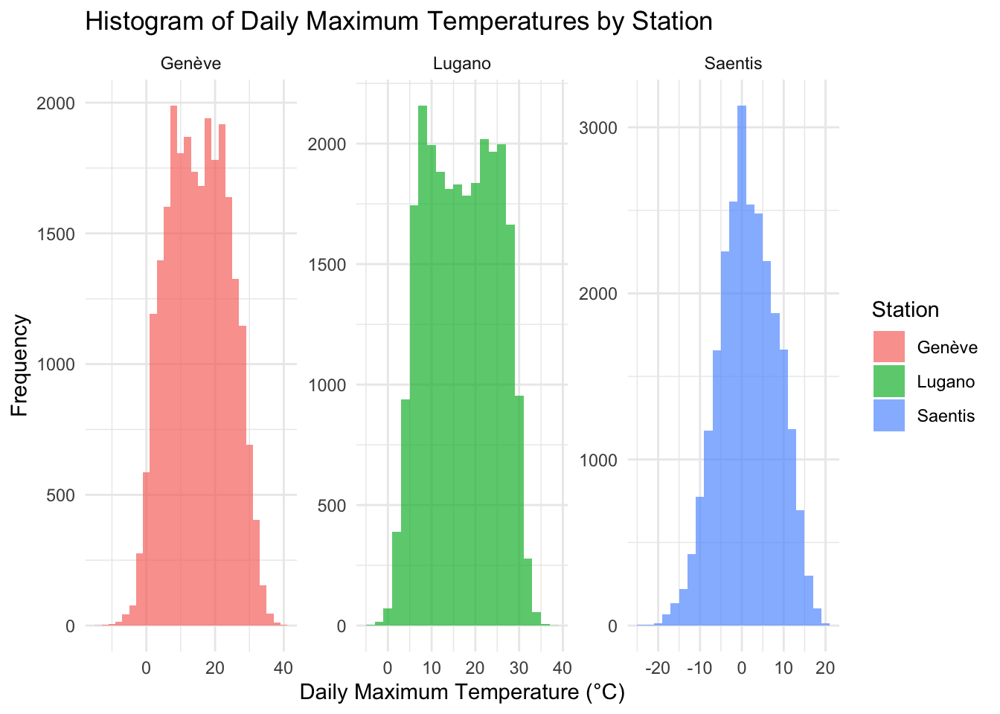
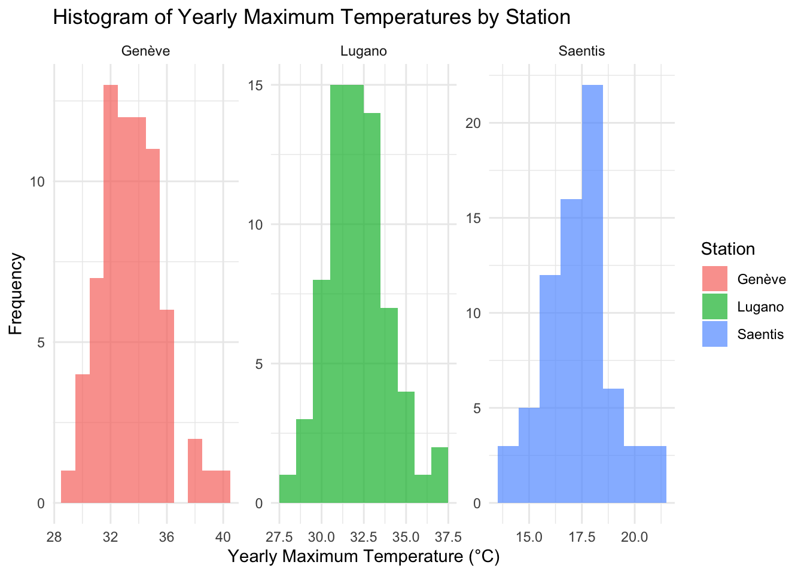
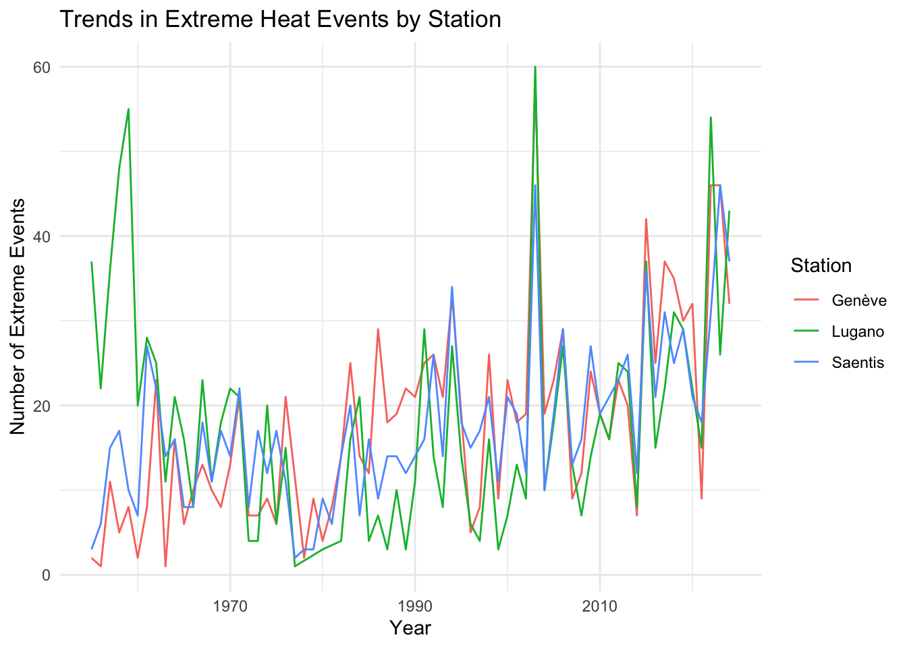
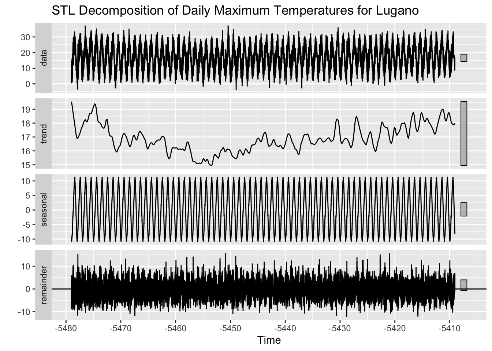
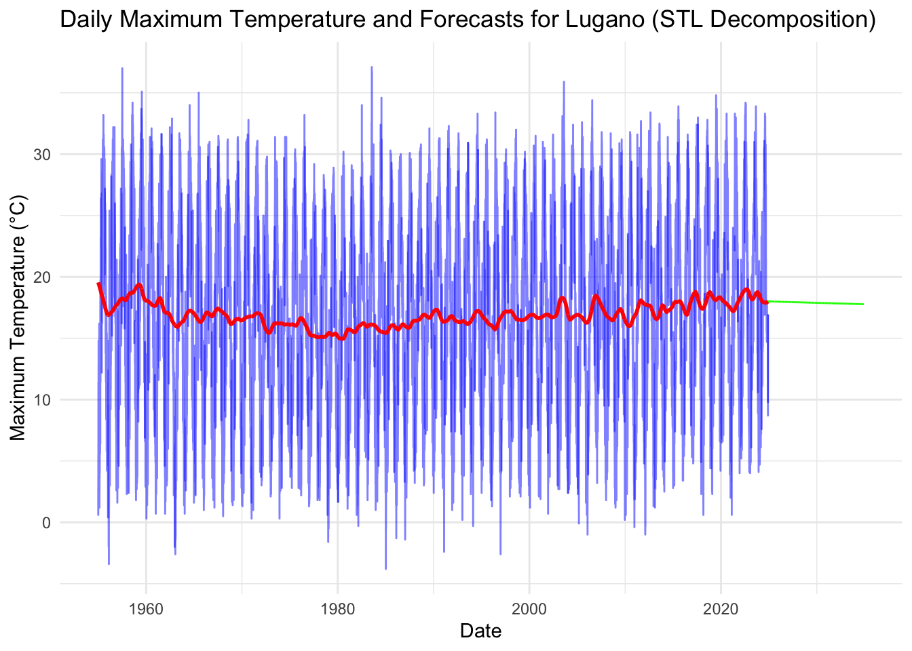
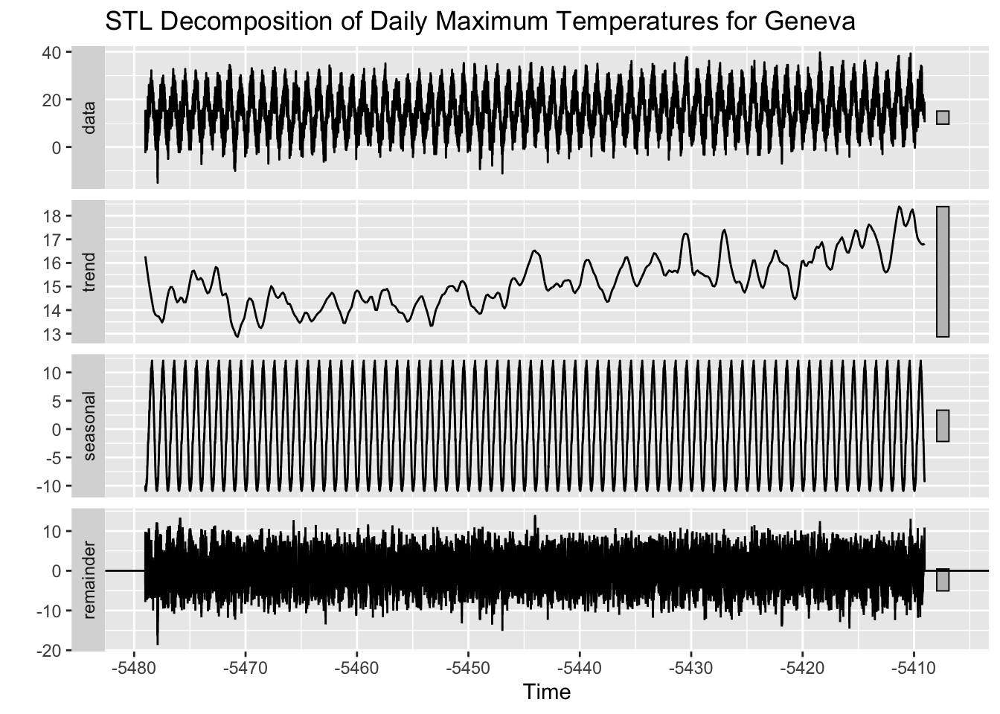
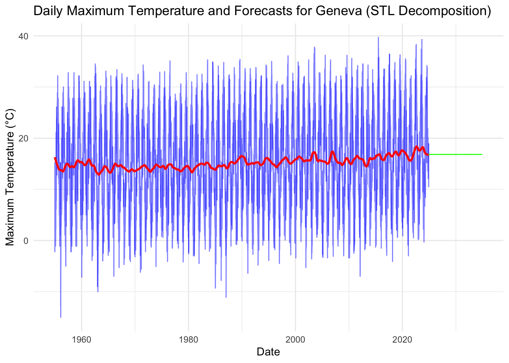
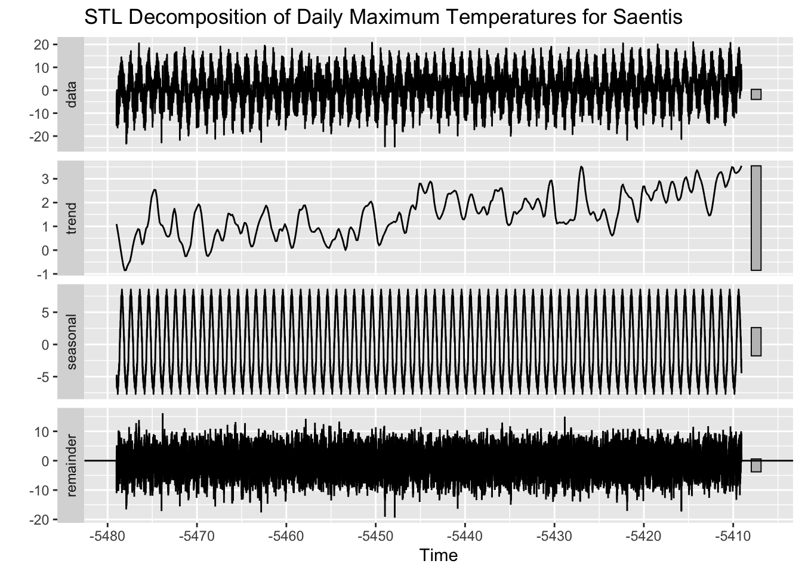
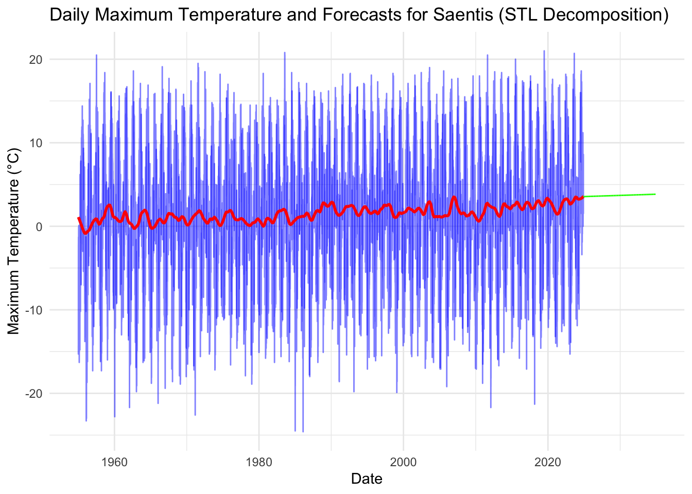

# Filter out rows with non-finite values in TMAX
data_filtered <- data %>%
filter(!is.na(TMAX)) # Use the correct column name for maximum temperaturePractical 3: Heat wave in Switzerland
Draw an histogram of the daily maximum temperatures values.

The histograms of daily maximum temperatures reveal clear climatic differences between the three stations. Geneva has a temperate climate, with most temperatures between 0°C and 30°C. Lugano has warmer conditions, reflecting its southern location. Säntis, a high-altitude resort, has much colder temperatures, ranging from -20°C to 20°C, with a peak around 0°C. These differences highlight the influence of altitude and geography on temperature distribution.
Extract the yearly maximum values for each station and draw their histogram:
# Extract yearly maximum values for each station
yearly_max <- data %>%
group_by(NAME, Year = format(Date, "%Y")) %>%
summarise(Yearly_Max = max(TMAX, na.rm = TRUE), .groups = "drop")
Analyse trends and patterns of extreme heat events for each station
To analyse the trends in extreme heat events for each station, I first calculated the 95th percentile of maximum temperatures (TMAX) for each station to define the threshold for extreme heat events. Next, I counted the number of extreme heat events for each station and year, grouping the data by station name and year. Finally, I visualised the trends by plotting the number of extreme heat events over time for each station.
# Calculate 95th percentile thresholds for each station
extreme_thresholds <- data %>%
group_by(NAME) %>%
summarise(Threshold_95 = quantile(TMAX, 0.95, na.rm = TRUE))
# Identify extreme heat events per station
data_extreme <- data %>%
inner_join(extreme_thresholds, by = "NAME") %>%
mutate(Extreme = TMAX > Threshold_95)
# Count the total number of extreme events per station
extreme_event_counts <- data_extreme %>%
filter(Extreme) %>%
group_by(NAME) %>%
summarise(Total_Extreme_Events = n(), .groups = "drop")
# Print the total number of extreme events per station
print(extreme_event_counts)# A tibble: 3 × 2
NAME Total_Extreme_Events
<chr> <int>
1 Genève 1230
2 Lugano 1239
3 Saentis 1223# Count extreme events by year and station
extreme_counts_by_year <- data_extreme %>%
filter(Extreme) %>%
mutate(Year = format(Date, "%Y")) %>%
group_by(NAME, Year) %>%
summarise(Count = n(), .groups = "drop")
The graph shows the trends in extreme heat events for the three stations: Geneva, Lugano and Säntis. All stations exhibit fluctuations, with notable peaks around 2003, 2015 and 2022-2023. The total number of extreme heat events above the 95th percentile threshold for each station shows similar magnitudes. Lugano has the highest count of extreme events (1,239), closely followed by Geneva (1,230), with Säntis having the fewest (1,223). This similarity may indicate that the frequency of extreme heat events is comparable across the stations despite their varying geographical and climatic characteristics. However, differences in the thresholds for each station and regional climatic patterns should be considered. For instance, Geneva and Lugano experience higher maximum temperatures, which suggest more frequent heat extremes due to their lower altitudes and warmer climates. On the other hand, Säntis has a significantly lower threshold, which indicate that extreme events are relative to the local climate conditions.
# Merge station names into the thresholds data using 'NAME' column
thresholds_with_names <- extreme_thresholds %>%
left_join(data %>% select(NAME) %>% distinct(), by = "NAME")
# Display the thresholds with station names
thresholds_with_names %>%
arrange(desc(Threshold_95)) %>%
print()# A tibble: 3 × 2
NAME Threshold_95
<chr> <dbl>
1 Genève 29.2
2 Lugano 29.1
3 Saentis 12.7The thresholds: Geneva: 29.2ºC, Lugano: 29,1ºC, and Säntis 12,7ºC.
In this part, we’ll analyze daily maximum temperatures by applying STL decomposition to separate the data into trend, seasonal, and irregular components. We will then use the trend component to forecast future temperatures for the next 10 years using an ARIMA model.
Yearly maximum temperature trends and predictions for the next 10 years for Lugano.
# Filter the data for Lugano
lugano_data <- data %>%
filter(NAME == "Lugano")
# Check for missing values
sum(is.na(lugano_data$TMAX))[1] 135# Replace NAs with the average temperature
lugano_data$TMAX[is.na(lugano_data$TMAX)] <- mean(lugano_data$TMAX, na.rm = TRUE)
# Create a time series of daily maximum temperatures
ts_daily_max <- ts(lugano_data$TMAX, frequency = 365, start = c(min(lugano_data$Date), 1))
# Apply STL decomposition (with seasonality)
stl_decomp <- stl(ts_daily_max, s.window = "periodic")
# Extract the trend component from the STL decomposition
trend_component <- stl_decomp$time.series[, "trend"]
# Apply an ARIMA model to the trend component
arima_model <- auto.arima(trend_component, seasonal = FALSE, stepwise = TRUE)
# Forecast the next 10 years (365 days per year)
forecast_steps <- 365 * 10 # Forecast for 10 years
arima_forecast <- forecast(arima_model, h = forecast_steps)
# Extract the forecasted values
forecast_values <- data.frame(Year = seq(max(lugano_data$Date) + 1, by = "day", length.out = forecast_steps),
Forecast_Max = as.numeric(arima_forecast$mean))Warning: Using `size` aesthetic for lines was deprecated in ggplot2 3.4.0.
ℹ Please use `linewidth` instead.
The analysis of daily maximum temperatures for Lugano shows a small decrease over time, as seen in the red trend line from the STL decomposition. While the drop is not drastic, there is a slight downward trend. The forecast, based on the ARIMA model applied to the trend, suggests that this trend will continue with minimal changes over the next 10 years, indicating a period of stability in temperature patterns for Lugano.
Yearly maximum temperature trends and predictions for the next 10 years for Geneva.
# Filter the data for Geneva
geneva_data <- data %>%
filter(NAME == "Genève")
# Check for missing values
sum(is.na(geneva_data$TMAX))[1] 197# Replace NAs with the average temperature
geneva_data$TMAX[is.na(geneva_data$TMAX)] <- mean(geneva_data$TMAX, na.rm = TRUE)
# Create a time series of daily maximum temperatures
ts_daily_max_geneva <- ts(geneva_data$TMAX, frequency = 365, start = c(min(geneva_data$Date), 1))
# Apply STL decomposition (with seasonality)
stl_decomp_geneva <- stl(ts_daily_max_geneva, s.window = "periodic")
# Extract the trend component from the STL decomposition
trend_component_geneva <- stl_decomp_geneva$time.series[, "trend"]
# Apply an ARIMA model to the trend component
arima_model_geneva <- auto.arima(trend_component_geneva, seasonal = FALSE, stepwise = TRUE)
# Forecast the next 10 years (365 days per year)
forecast_steps <- 365 * 10 # Forecast for 10 years
arima_forecast_geneva <- forecast(arima_model_geneva, h = forecast_steps)
# Extract the forecasted values
forecast_values_geneva <- data.frame(Year = seq(max(geneva_data$Date) + 1, by = "day", length.out = forecast_steps),
Forecast_Max = as.numeric(arima_forecast_geneva$mean))
The analysis of daily maximum temperatures for Geneva shows a small increase over time, as seen in the red trend line from the STL decomposition. However, this increase is not large, and the temperatures stay fairly stable. The forecast, based on the ARIMA model applied to the trend, suggests that this stable pattern will continue over the next 10 years, with only slight changes, indicating little variation in temperature for Geneva.
Yearly maximum temperature trends and predictions for the next 10 years for Säntis.
# Filter the data for Saentis
saentis_data <- data %>%
filter(NAME == "Saentis")
# Check for missing values
sum(is.na(saentis_data$TMAX))[1] 63# Replace NAs with the average temperature
saentis_data$TMAX[is.na(saentis_data$TMAX)] <- mean(saentis_data$TMAX, na.rm = TRUE)
# Create a time series of daily maximum temperatures
ts_daily_max_saentis <- ts(saentis_data$TMAX, frequency = 365, start = c(min(saentis_data$Date), 1))
# Apply STL decomposition (with seasonality)
stl_decomp_saentis <- stl(ts_daily_max_saentis, s.window = "periodic")
# Extract the trend component from the STL decomposition
trend_component_saentis <- stl_decomp_saentis$time.series[, "trend"]
# Apply an ARIMA model to the trend component
arima_model_saentis <- auto.arima(trend_component_saentis, seasonal = FALSE, stepwise = TRUE)
# Forecast the next 10 years (365 days per year)
forecast_steps <- 365 * 10 # Forecast for 10 years
arima_forecast_saentis <- forecast(arima_model_saentis, h = forecast_steps)
# Extract the forecasted values
forecast_values_saentis <- data.frame(Year = seq(max(saentis_data$Date) + 1, by = "day", length.out = forecast_steps),
Forecast_Max = as.numeric(arima_forecast_saentis$mean))
The analysis of daily maximum temperatures for Säntis shows a slight upward trend, as indicated by the red trend line from the STL decomposition. While the increase is modest, it suggests a gradual rise in temperatures over time. The forecast, based on the ARIMA model applied to the trend component, predicts that this upward trend will continue over the next 10 years, with minimal change, indicating a period of slow warming for Saentis.